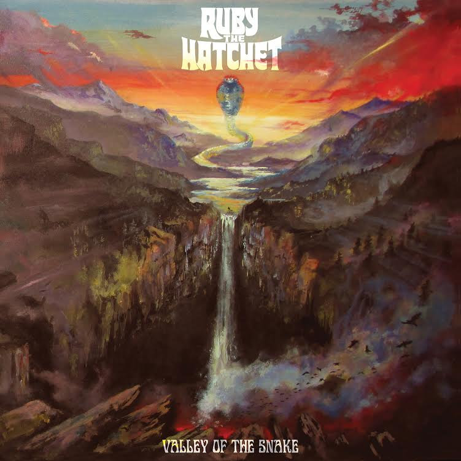

Featured album
Valley of the Snake
Hailing from Philadelphia or more classically known as Tranq Town, Ruby the Hatchet's second album shows the sophomore slump just isn't real. Jillian Taylor's vocals very reminiscent of the great Lori S from acclaimed Acid King. If doom metal was the left leg and hard rock was the right, Ruby the Hatchet puts them in a 3 second spladle and they don't get back up. If you want a taste of some more upbeat doom with heavy fuzz and filthy keyboard/guitar riffs I would highly suggest checking out track #2 Vast Acid.
Full album on Youtube →Featured 10-09-2026